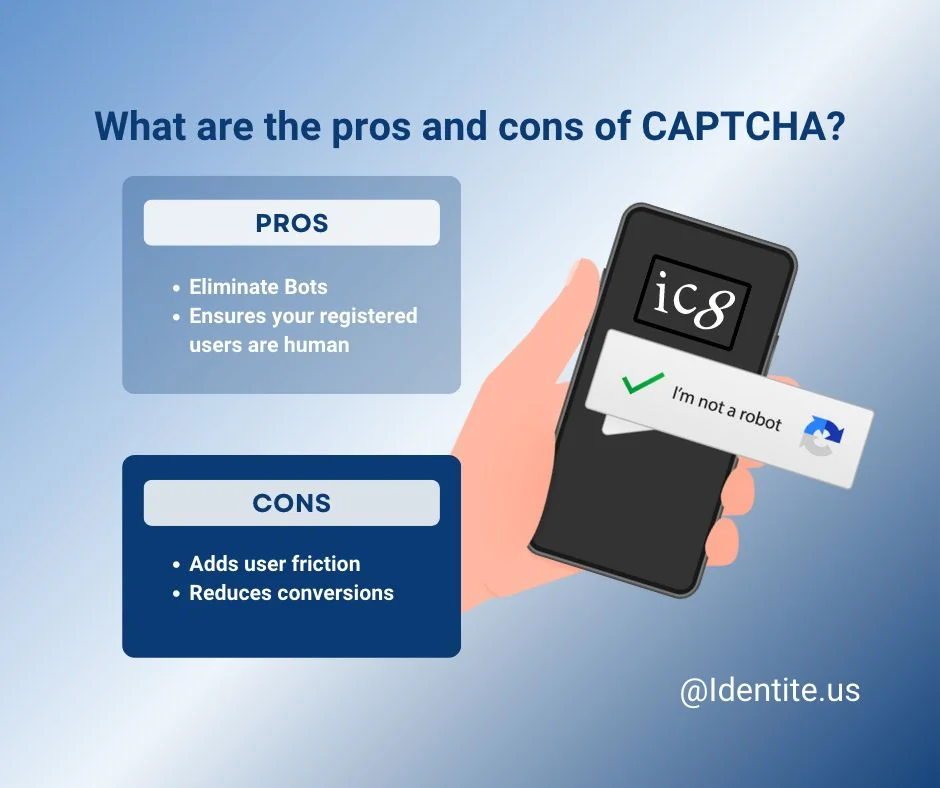

What is CAPTCHA?
The term is an acronym that stands for “Completely Automated Turning test to tell Computers and Humans Apart”. This is simply an authentication service to ensure the website visitor is not an automated software program designed to emulate a human. It works by asking the human to perform tasks that are nearly impossible for the software program or bot to emulate.
What are the pros and cons of CAPTCHA?

The pros and cons seem to weigh differently, depending on who you are asking and what issue is being addressed. The Chief Risk Officer might be trying to address the issue of “fake accounts” or “spam” registrations. If this leads to fewer conversions, the risk outweighs the reward.
What is PasswordFree® MFA and how does it also make your site bot resistant?
PasswordFree® MFA is an authentication service that does not use passwords but instead uses factors of authentication that are stronger such as something a user has and something a user is. To execute something a user has, a user’s personal device registers as a secure token and by way of an app or client, execute our patented Full Duplex Authentication®. This not only executes the “something you have” method of authentication, but it also protects the user against phishing and impersonation techniques that steal a user’s credentials. Most personal devices such as a smartphone, MacBooks, and Surface Tablets support the use of a local biometric. By bifurcating steps of the registration and authentication to a second device as well as performing asking the user to perform a biometric task, it is next to impossible to emulate this with a software program or bot.
Do I need both CAPTCHA and PasswordFree® MFA?
The short answer is no. As previously discussed, PasswordFree® MFA is also bot resistant. However, the actions a user performs are natural to the human and will significantly reduce the friction that is usually associated with a typical username/password type of registration. If a website were also using a CAPTCHA service, then by replacing both authentication services with PasswordFree® MFA there can be a significant reduction in the friction that website visitors are experiencing. Some of the CAPTCHA and bot detection services are able to run in the background such that the user is unaware. These are helpful to guard against things such as the pesky price shopping programs and can be complementary to PasswordFree® MFA.
Conclusion
CAPTCHA in its conspicuous form has certainly outlived its original purpose. What seemed to make things worse was that CAPTCHA programs would purposely take users through a second round randomly even if the first round was a pass. By taking users through a second round of CAPTCHA, it was thought that this too would make it difficult for bots as most were designed to get through a single round. By moving to an inconspicuous approach where a user doesn’t even know CAPTCHA is there, there may still be a good case as long as it's not slowing down the website's performance.
Because PasswordFree® MFA is also bot resistant, there is a strong case for why it can replace CAPTCHA. It has low friction, is simple to understand and it protects users against other security threats such as phishing and website impersonation attacks.
Visit us at: https://www.identite.us/passwordfree-mfa to learn more.